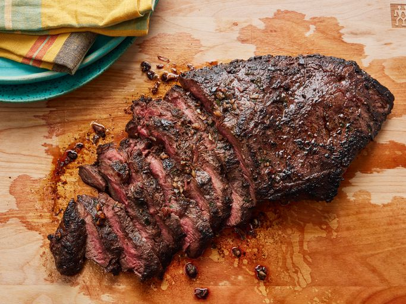

Steak

Description
Skip the steakhouse and make restaurant-worthy steak at home. Trust us, you're going to want to bookmark this irresistible flat iron steak recipe — you'll come back to it again and again.
Flat iron steak is cut from beef shoulder. To make a flat iron steak, butchers remove the connective tissue to separate the top shoulder blade into two cuts: One is the top blade, the other is the flat iron.
Ingredients
- Beef
- Garlic
- Beef tallow
- Butter
- Salt & Pepper
Steps
- Put the meat in the oven until inside temp reach 42c.
- Put tallow into pan make sure it hot before put your meat in.
- Once the steak reach 42c, remove from the oven, sear in the pan, flip as much as you want
- Put in butter and continuously spoon butter over your steak.
- Steak is medium rare when internal temp reach 57c
- Rest your steak for 5 min. Enjoy!!
Home